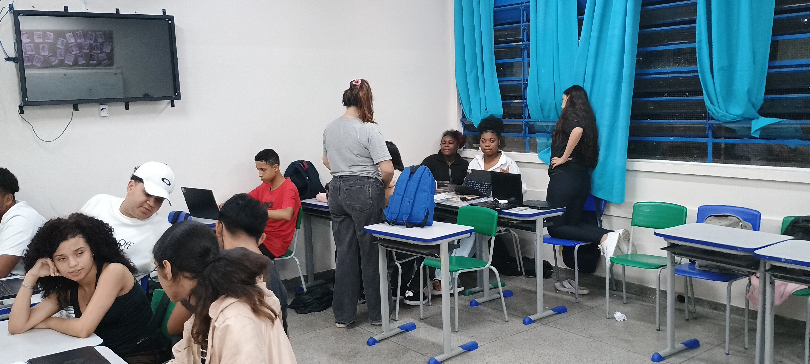
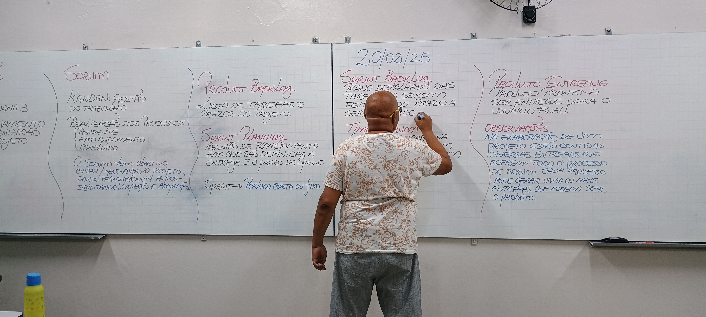
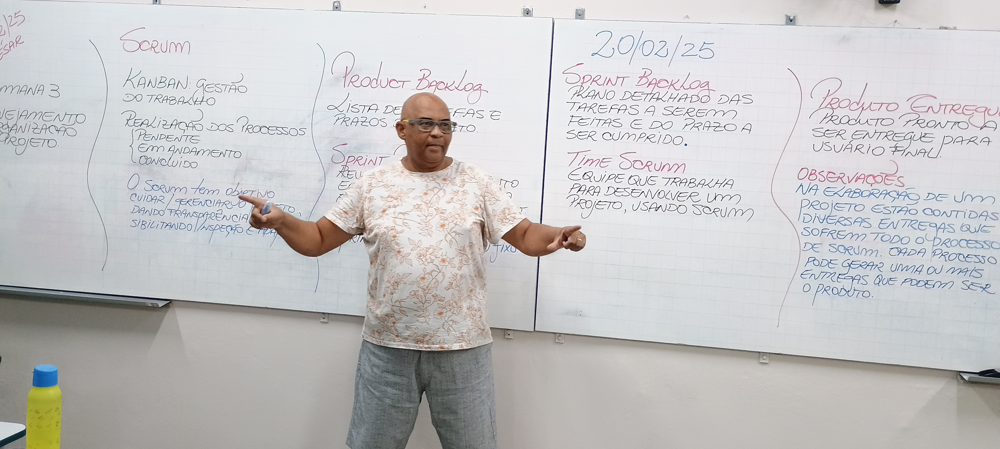
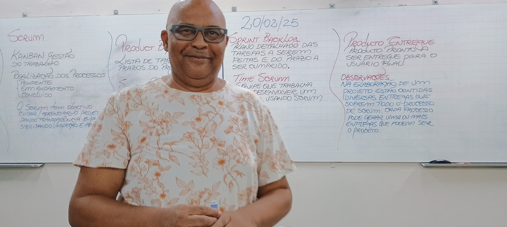
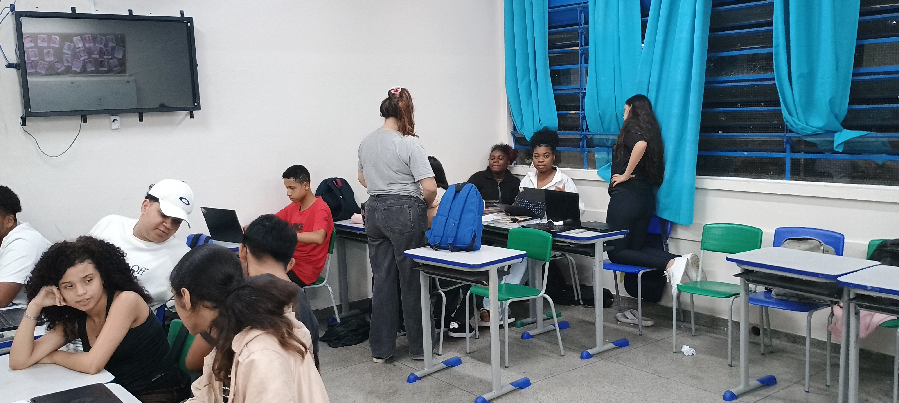
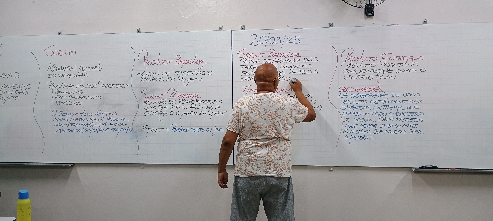
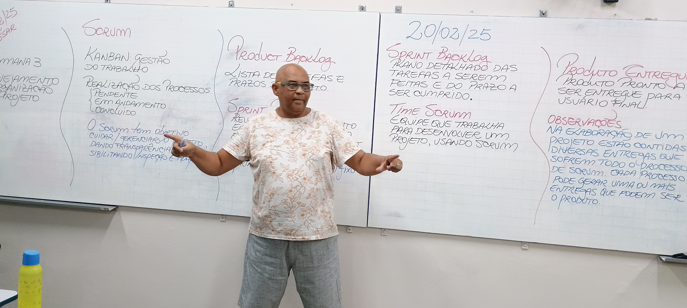
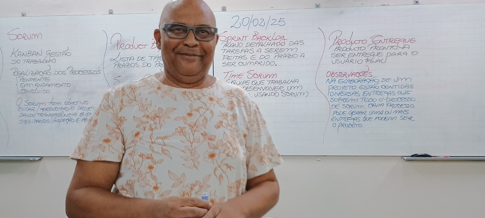

Projeto Multidisciplinar
Ao longo do segundo ano do curso técnico em Desenvolvimento de Sistemas, os estudantes estão desenvolvendo o projeto com base em situações-problema reais do mundo do trabalho.
Durante o processo, colocamos em prática os conhecimentos adquiridos nas disciplinas técnicas, utilizando ferramentas de gestão de projetos, como cronograma, análise de riscos e estrutura analítica (EAP). Também exploramos metodologias de inovação, como Design Thinking e prototipagem, buscando criar soluções viáveis, criativas e sustentáveis.
Além do desenvolvimento técnico, o projeto reforça valores importantes como ética, responsabilidade social e sustentabilidade, alinhando-se aos Objetivos de Desenvolvimento Sustentável (ODS) da ONU. Essa experiência permite aos estudantes vivenciar todas as fases de um projeto real, favorecendo o trabalho em equipe, a autonomia e o pensamento crítico — competências essenciais para formação profissional.
Momentos do Projeto


 






